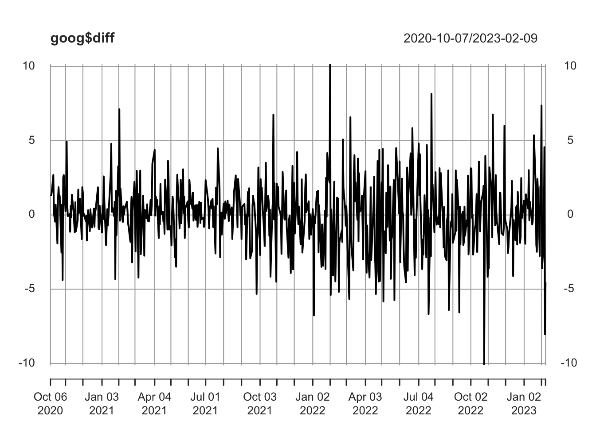

Chapter 3 Time Series
3.1 Decomposition
We want to decompose our time series into three parts: a trend component (\(T\)), a seasonality component (\(S\)), and a random component (\(R\)). That is, for each observation \(Y_t\), we want to break it down into three parts:
\(Y_T = T_t + S_t + R_t\)
First, let’s talk about the trend component (T). The trend component is a moving average, which you can obtain using the ma function within the forecast library.
set.seed(1)
# generate some fake data that resembles our real dataset (noce the week_no variable, which
# corresponds with the enterprise week number from your original data)
trend = seq( from = 10, to = 10 + 52 * 3 - 1, by = 1)
df = data.frame( invoiced = trend + (rnorm(52 * 3, mean = 25, sd = 40)),
week_no = rep(1:52, 3), # week number
id = 1:(52 * 3))
plot(df$invoiced, type = "l")y_ts = ts(df$invoiced, frequency = 52) # make your data into a time series object
df$trend = ma(y_ts, order = 52) # use the ma function from the forecast libraryNow that we have added a trend variable to our data frame, let’s get the seasonal (\(S\)) component. To estimate the seasonal component for each week, simply average the detrended values for that week. These seasonal component values are then adjusted to ensure that they add to zero.
# 1. subtract the trend
df$detrend = df$invoiced - df$trend
# 2. group by week number and take the average of the de-trended values
df = df %>% group_by(week_no) %>%
mutate(S1 = mean(detrend, na.rm = T)) %>%
ungroup() %>%
mutate(S = S1 - mean(S1)) %>% # make sure the sum of the seasonal components is 0
select(!c(detrend, S1))Finally, the random component is calculated by subtracting the estimated seasonal and trend-cycle components. That is,
\(R_t = Y_t - T_t - S_t\).
df = mutate(df, R = invoiced - trend - S)Now, plot each line:
df %>%
pivot_longer(!(c("week_no", "id"))) %>%
ggplot(aes(id, value, color = name)) +
geom_line() +
theme_minimal() +
ggtitle("Decomposition of invoiced time series")3.2 Forecasting
Let’s consider some very simple potential forecast models. The simplest potential model is to forecast future values as the last observed value. That is,
\[\begin{equation} \hat{y}_{T+1 | T} = y_T \end{equation}\]
Another very simple model consists of forecasting future values as the average over the entire observed series. That is,
\[\begin{equation} \hat{y}_{T+1 | T} = \frac{1}{T} \sum_{i=1}^T y_i \end{equation}\]
A slightly more complicated approach that typically works better is to forecast future values as a weighted average of past values, with higher weights assigned to more recent observations. This model can be expressed as,
\[\begin{equation} \hat{y}_{T+h | T} = \alpha y_T + (1-\alpha) \hat{y}_{T | T - 1} \end{equation}\]
How can we show that weights are decreasing in time? What does this expression imply about forecasts from this model? This is implemented in ses below.
The next level up in complexity is using the same idea but adding a trend estimate. In this case, the forecast values are,
\[\begin{equation} \hat{y}_{T+h | T} = l_T + h b_T, \end{equation}\]
Where \(l\) is the estimated level of the time series and \(b_T\) is the estimated trend at time \(T\). What does this expression imply about forecasts from this model? This is implemented in holt below.
fx1 <- ses(y_ts, h=5)
fx2 <- holt(y_ts, h=15)
round(accuracy(fx1),2)## ME RMSE MAE MPE MAPE MASE ACF1
## Training set 6.46 37.15 28.71 -21.53 55.35 0.56 -0.08autoplot(y_ts) +
autolayer(fx1, series="Simple Exponential Smoothing", PI=F) +
autolayer(fx2, series="Holt Winters", PI=F) +
ylab("Invoiced") + xlab("Year")
3.3 Statistical model
One of the drawbacks of the forecasting methods we have used so far is that there is no uncertainty quantification. Fortunately, there is an easy way to formulate the exponential smoothing models we have been working with as a statistical model. For more detail, see this excellent resource.
mod = ets(y_ts, model="ZZZ", damped=NULL, alpha=NULL, beta=NULL,
gamma=NULL, phi=NULL, lambda=NULL, biasadj=FALSE,
additive.only=FALSE, restrict=TRUE,
allow.multiplicative.trend=FALSE)Once the model is fit, we can see which model was chosen using the summary function. We label each state space model as ETS( \(\cdot, \cdot, \cdot\)), for (Error, Trend, Seasonal). The possibilities for each component are: Error = {\(A,M\)}, Trend = {\(N,A,A_d\)}, and Seasonal = {\(N,A,M\)}. Here, \(M\) denotes multiply and \(A\) denotes add. In an \(M\) type model, the component multiplies (i.e., a season in which invoices are 1.1 times as large).
## ETS(A,A,N)
##
## Call:
## ets(y = y_ts, model = "ZZZ", damped = NULL, alpha = NULL, beta = NULL,
##
## Call:
## gamma = NULL, phi = NULL, additive.only = FALSE, lambda = NULL,
##
## Call:
## biasadj = FALSE, restrict = TRUE, allow.multiplicative.trend = FALSE)
##
## Smoothing parameters:
## alpha = 0.002
## beta = 0.002
##
## Initial states:
## l = 30.6217
## b = 1.054
##
## sigma: 35.968
##
## AIC AICc BIC
## 1911.506 1911.906 1926.755
##
## Training set error measures:
## ME RMSE MAE MPE MAPE MASE ACF1
## Training set -2.913354 35.50392 28.2599 -29.14288 55.95159 0.552141 -0.03601155There is also a straightforward way to forecast using the fitted model.
mod %>% forecast(h=15) %>% autoplot()
To do
- Cut your time series into a training set (all but the last 3 months of data) and a test set (last 3 months)
- Fit a state-space model using
ETSto your (weekly) time series. What model was chosen? Compare forecasts for 12 weeks ahead to the actual data. - Now make your training set and test set into monthly data and repeat step 2.
- On a monthly basis, how do the residuals of the weekly model compare to the residuals of the monthly model?